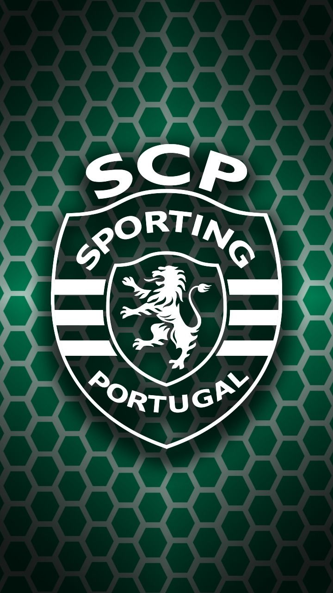
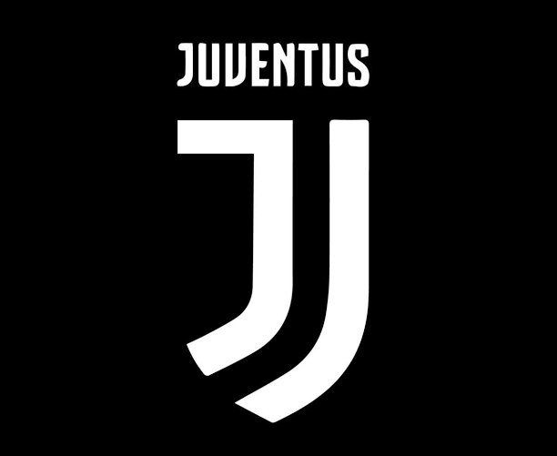

Modelo 3D Interactivo
Gira, acerca y explora el modelo en 3D

Biografía
Cristiano Ronaldo dos Santos Aveiro (Funchal, Madeira, 5 de febrero de 1985) es un futbolista portugués que juega como delantero. Es considerado uno de los mejores jugadores en la historia de este deporte, reconocido por su disciplina férrea, sus récords históricos de goleo y sus 5 Balones de Oro.
Trayectoria por Clubes

Sporting de Lisboa
El club donde se formó como profesional. Su gran actuación en un amistoso contra el Manchester United catapultó su fichaje a la élite europea.
Manchester United
Bajo la tutela de Sir Alex Ferguson ganó su primera Premier League y su primer Balón de Oro, consolidándose como estrella mundial.

Real Madrid C.F.
Su etapa más dorada. Máximo goleador histórico del club blanco, conquistando 4 Champions League y rompiendo todos los registros.

Juventus F.C.
Llevó su jerarquía a Italia, ganando múltiples títulos de Serie A y premios individuales, demostrando su vigencia goleadora en otra gran liga.

Al Nassr F.C.
Pionero en la liga saudí, continúa rompiendo récords históricos de goleo a nivel global y expandiendo el impacto del fútbol en Medio Oriente.